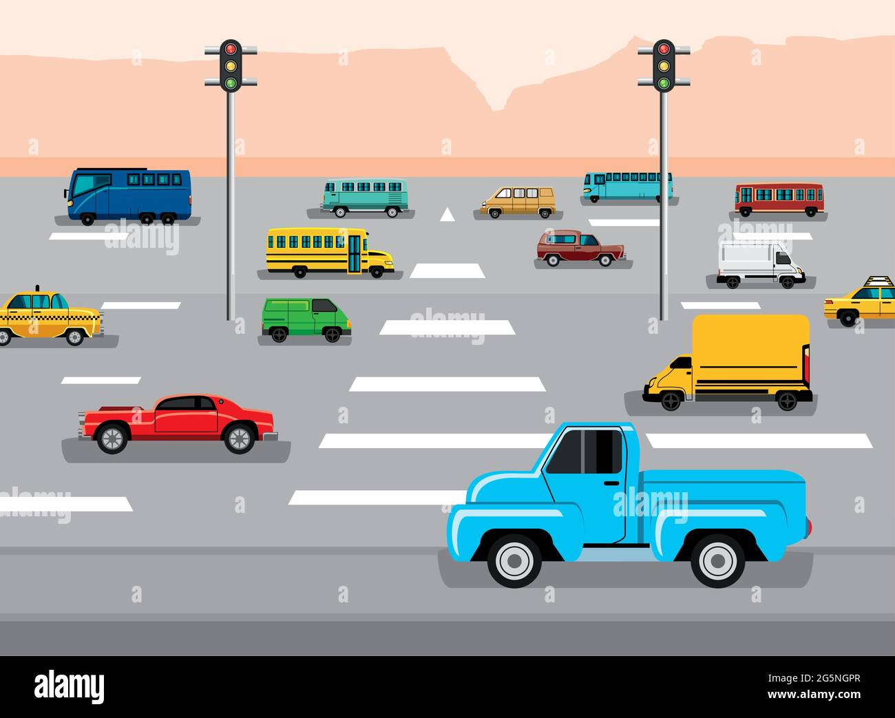

Welcome to my website
This page provides information about different types of vehicles used for transportation. Vehicles help people travel safely and comfortably.
Cars are four-wheeled vehicles used for personal transportation. They are comfortable and suitable for families and long journeys.
Bikes are two-wheeled vehicles that are easy to ride and fuel-efficient. They are commonly used for daily travel.
Buses are large vehicles used for public transportation. They can carry many passengers at the same time.
Trucks are heavy vehicles used to transport goods and materials from one place to another.
Electric vehicles run on electricity instead of fuel. They are eco-friendly and help reduce pollution.
| Vehicle Type | Description |
|---|---|
| Car | A four-wheeled vehicle used for personal transportation. |
| Bike | A two-wheeled vehicle that is easy to ride and fuel-efficient. |
| Bus | A large vehicle used for public transportation, capable of carrying many passengers. |
| Truck | A heavy vehicle used to transport goods and materials. |
| Electric Vehicle | A vehicle that runs on electricity, eco-friendly and helps reduce pollution. |
| Hybrid Vehicle | A vehicle that combines fuel and electric power for improved efficiency. |
| Commercial Vehicle | A vehicle designed for transporting goods and cargo over long distances. |
| Automatic Transmission | A type of transmission that automatically changes gear ratios as the vehicle moves. |
A vehicle is a machine used to transport people or goods from one place to another.
Vehicles include cars, bikes, buses, and trucks.
Electric vehicles use electric motors instead of fuel engines.
Hybrid vehicles combine fuel and electric power for efficiency.
Commercial vehicles carry goods and cargo over long distances.
Vehicles consist of wheels, engines, and control systems.
Automatic transmission makes driving easier for beginners.
Safety features include seat belts, airbags, and anti-lock brakes.
Fuel efficiency is a key factor in vehicle choice.
Vehicles are classified by purpose, fuel type, and size.
Old models are replaced by modern vehicles with advanced technology.
ICE vehicles use petrol or diesel engines.
GPS helps in navigation.
Vehicles contribute to mobility and economic development.
Autonomous vehicles are emerging with AI technology.
Traffic rules ensure road safety for drivers and pedestrians.
Vehicles impact the environment through emissions and fuel use.
Public transport vehicles reduce traffic congestion and pollution.
Knowledge about vehicles helps in choosing, maintaining, and using them responsibly.
Proper use of vehicles supports efficient and safe transportation.
